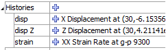
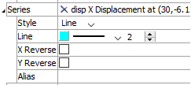
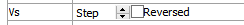
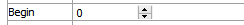
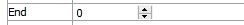
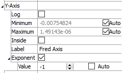
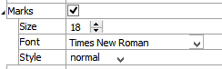
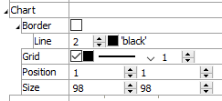

历史
说明
二维图表，用于显示模型执行期间记录的一个或多个历史。
属性
历史

指定要在绘图项中包含哪些历史。
历史：模型当前所含历史列表的容器。该字段也可用于添加模型中不存在的历史名称：在编辑字段中输入名称并按下“加号”按钮即可。
[名称或编号]：可通过加号按钮添加该历史（字段标签中显示的名称或索引编号）。其序列标签显示在按钮旁边。添加后，会在该绘图项的“属性”列表中插入一个 序列 属性。
序列

设置单个序列的显示属性。使用 历史 列表添加到绘图项的每个历史项都会有一个序列字段。
序列：使用删除按钮将该序列从绘图中删除。相邻标签指明该序列的名称（与 历史 列表中显示的名称一致）。
样式：设置该序列的线样式（选项为“线”、“标记”或“两者”）。
线：设置该序列的颜色、线样式和线粗细（当 样式 选择“线”或“两者”时显示此字段）。
标记：设置该序列中标记的颜色、形状（选项为“加号”、“星号”、“菱形”、“减号”、“圆形”、“井号”）和大小（当 样式 选择“标记”或“两者”时显示此字段）。
X 反向：反转该序列中的 \(x\) 值（勾选时）。
Y 反向：反转该序列中的 \(y\) 值（勾选时）。
别名：设置用于在图例中标识该序列的名称。
对比

指定历史将针对什么量进行绘制。
对比：指定绘图项 x 轴应使用什么量。若为空，则使用默认值“step”。在此输入的其他值应与 历史 列表中显示的字段标签一致。
起点

指定 \(x\) 轴的最低（左端）值。
起点：输入所需的值。
终点

指定 \(x\) 轴的最高（右端）值。
终点： 输入所需的值。
跳过

指定 \(x\) 轴上显示值的间隔（每隔 skipth 个值显示；若 序列-样式 设为“线”，则此设置无效）。
跳过： 输入所需的值（默认值为 0 = 不跳过）。
X 轴（以及 Y 轴）

指定坐标轴的比例和标签（\(x\) 轴和 \(y\) 轴的控制项相同）。
X 轴：这是以下属性的容器。
对数：对该坐标轴使用对数比例（勾选时）。
最小值：指定该坐标轴上出现的最小值。勾选“自动”可自动设置该值。
最大值：指定该坐标轴上出现的最大值。勾选“自动”可自动设置该值。
内侧：在图表中原点处垂直于坐标轴方向绘制一条线（勾选时）。
标签：设置用于在图表上标识该坐标轴的文本。
指数：在坐标轴标签中显示指数（勾选时）。这也是以下内容的容器。
值：勾选“自动”时自动设置指数。取消勾选时，可在编辑字段中设置该值（若设为 0，则去除坐标轴标签）。刻度标记标签会相应调整。
标题

控制绘图项的标题。
标题：在图表顶部显示图表标题（勾选时）。在“别名：”字段中输入文本来设置图表标题。此属性还包含以下内容。
大小：设置标题中文字的大小。
字体：设置文本所用的字体面。
样式：设置文本样式（选项为常规、粗体、斜体、粗斜体）。
标签

控制图表上标签的外观。
标签：在图表中包含坐标轴标签（勾选时）。
大小：设置标签中文字的大小。
字体：设置标签文字所用的字体。
样式：设置文本样式（选项为常规、粗体、斜体、粗斜体）。
刻度标记

控制图表上坐标轴刻度标签的外观。
刻度标记：在图表中包含坐标轴刻度标签（勾选时）。
大小：设置刻度标签中文字的大小。
字体：设置刻度标签文字所用的字体。
样式：设置文本样式（选项为常规、粗体、斜体、粗斜体）。
图表

设置图表的显示选项。
图表：这是一个容器。
边框：包含图表边框（勾选时）。
线：设置边框线宽和颜色。网格：在主刻度处包含图表网格（勾选时），并设置网格线的颜色、线样式和宽度。
位置：分别指定该项左下角的下边距和左边距位置，以可用渲染区域的百分比表示。
若这些值的设置使得在当前 size 设置下该项超出可用渲染区域，则大小将自动向下调整以适应该区域。
大小：分别指定该项的 \(x\) 和 \(y\) 大小，以可用渲染区域的百分比表示。另见 position 属性。
透明度

设置绘图项的透明度。此设置不适用于二维模型对象。
透明度：为项目应用透明度（勾选时）。开启时，透明度设为默认值 70，并处于“锁定”状态。锁定时，可用的透明度范围被限制在 70（最低，略有透明）到 100（最高，完全不可见）。要访问完整的透明度取值范围（0-100），请按下锁形图标以“解锁”透明度范围；图标会随之改变（
）。
使用帮助按钮可获取有关此特定属性的帮助。
注意
应当提醒用户：低于 70 的值往往“更不透明”得难以察觉，并且可能导致深度透视看起来奇怪或不正确。
图例
设置该项在绘图图例中的显示。所有绘图项至少都具有 标题 属性。
图例：在图例中显示（勾选）有关该绘图项的所有信息。
标题：在图例中显示（勾选）该绘图项的标题。“别名：”字段可用于为该绘图项指定自定义标题。
大小：设置图例中文本的大小。
字体：设置文本所用的字体面。
样式：设置文本样式（选项为常规、粗体、斜体、粗斜体）。
颜色：设置文本颜色。
在 标题 下方，历史图表 绘图项还在 图例 中提供用于 序列 和 对比 的控制项。各自的子属性与 标题。 的子属性相同。
| 这些内容对您有帮助吗？… | FLAC3D © 2019, Itasca | 原文更新于 2020 年 10 月 8 日 |